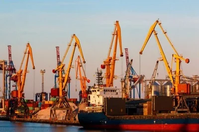

Номер: 275
Назва спеціальності:
Транспортні технології

Навчання за спеціальністю 275.03 «Транспортні технології (на
автомобільному транспорті)» проводиться за сучасною акредитованою
освітньою програмою. Основна увага в освітній програмі приділена
логістиці. Дана освітня програма є цікавою і забезпечується
сучасним освітнім середовищем. Підчас проходження даної освітньої
програми студент зможе набути наступні фахові компетентності, що
безпосередньо відповідають спеціальності: здатність аналізувати та
прогнозувати параметри і показники функціонування транспортних
систем та технологій з урахуванням впливу зовнішнього середовища;
здатність організації та управління
навантажувально-розвантажувальними роботами та складськими
операціями на транспорті; здатність організовувати та управляти
перевезенням вантажів (автомобільним транспортом); здатність
організовувати та управляти перевезенням пасажирів та багажу
(автомобільним транспортом); здатність до оперативного управління
рухом транспортних потоків; здатність організовувати взаємодію
видів транспорту; здатність оптимізувати логістичні операції та
координувати замовлення на перевезення вантажів від виробника до
споживача, дотримуватись законів, правил та вимог систем
управління якістю; здатність проектувати транспортні
(транспортно-виробничі, транспортно-складські) системи і їх окремі
елементи; здатність оцінювати експлуатаційні,
техніко-економічні,технологічні, правові, соціальні, та екологічні
складові організації перевезень; здатність оцінювати та
забезпечувати ергономічну ефективність транспортних технологій;
здатність оцінювати та забезпечувати безпеку транспортної
діяльності; здатність організовувати міжнародні перевезення;
здатність оцінювати плани та пропозиції щодо організації та
технології перевезень, складені іншими суб’єктами, та вносити
необхідні зміни виходячи з техніко-експлуатаційних параметрів та
принципів функціонування об’єктів та пристроїв транспортної
інфраструктури, транспортних засобів; здатність використовувати
сучасні інформаційні технології, автоматизовані системи керування
та геоінформаційні системи при організації перевізного процесу;
здатність організовувати транспортно-експедиторське обслуговування
вантажів; здатність врахувати людський фактор в транспортних
технологіях; здатність оцінювати та забезпечувати реалізацію
логістичних ланцюгів та операцій у агропромисловому виробництві,
постачанні та бізнесі; здатність оцінювати ефективність
інтелектуальних технологій на транспорті. Після проходження
освітньої програми та набуття фахових компетентностей студент
зможе працювати в: компаніях з перевезення вантажів та пасажирів;
логістичних фірм, підрозділах транспортних та виробничих
підприємств; брокерських конторах; міжнародних транспортних
організаціях та підрозділах митної служби; проєктних,
експлуатаційних, експедиторських транспортних підприємств;
управлінні транспорту та зв’язку виконавчих органів влади;
відділах Державтоінспекції та відділах безпеки руху підприємств;
Державної інспекції України з наземного транспорту; Державної
інспекції автомобільних шляхів України та ін.